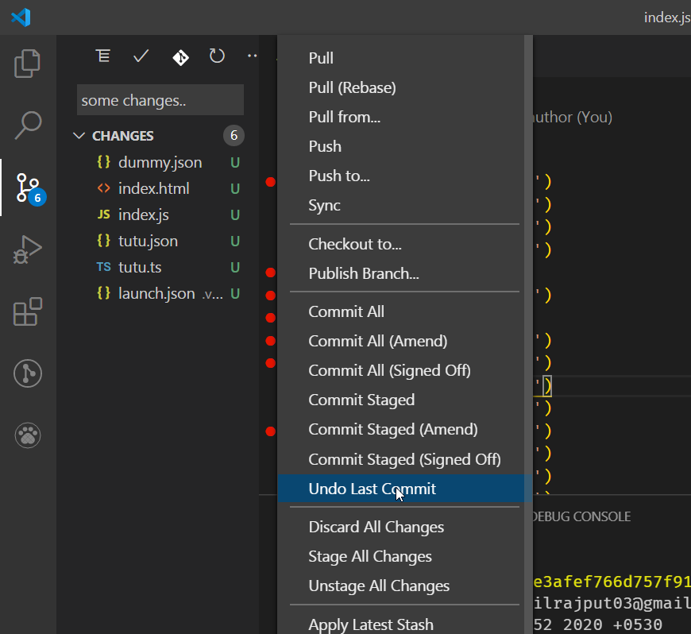
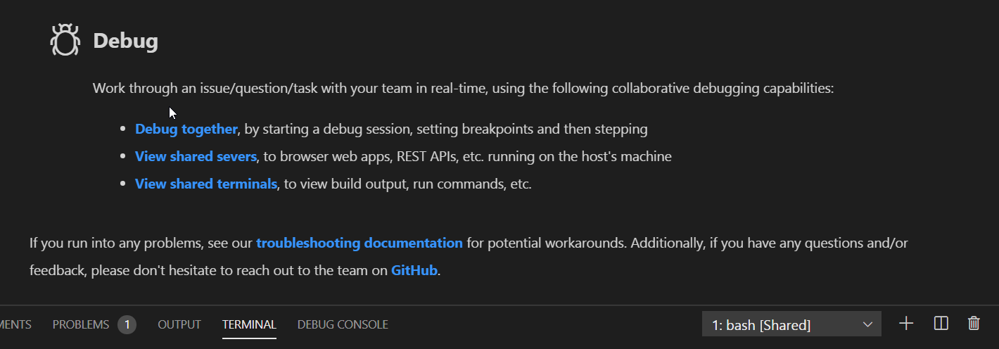

Graphql Code iterpreter : https://marketplace.visualstudio.com/items?itemName=Prisma.vscode-graphql

Better Comments - Aaron Bond
Bracket Pair Colonizer - CoenraadS
Code Time - Software
Color Highligh - Sergii Naumov
Error Lens - Alexander
Git History - Don Jayamanne
GitLens -- Git supercharge - Eric Amodio
Image preview - Kiss Tamas
Live Sass Compiler - Ritwick Dey
Live Server - Ritwick Dey
Paste JSON as Code - quicktype
Prettier - Code formatter - Esben Petersen
REST Client - Huachao Mao
Stackoverflow Instant Search - Alexey-Strakh
Tokyo Night - enia - theme..
vscode-faker - Budi Irawan
Reverse a git commit very easily: Amazing undo last commit with vscode.
Live Share in Vscdoe:
By: Microsoft. Helps you write code with friends like google docs way of writing code. Download this amazing extension. You need to connect a github account or github account for collaborating lively to be possible.

and it will appear as : 

RGB:
'#00f' >> blue
'#0f0' >> green
'#f00' >> redStackoverflow Instant Search (vscode extension)
Select some text in the code and press.., Ctrl +h to edit something with the query, but press Ctrl + Shift + h to directly query, it will show you all the related queries directly there, in vscode.
Use faker: (vscode extension)
Ctrl + shift + p and typefaker and appropriate filed to use in code.
Bare list generated
code --list-extensionsaaron-bond.better-comments
Alexey-Strakh.stackoverflow-search
antonholmberg.remove-bg
apollographql.vscode-apollo
bierner.emojisense
bradgashler.htmltagwrap
christian-kohler.npm-intellisense
christian-kohler.path-intellisense
CoenraadS.bracket-pair-colorizer-2
DavidAnson.vscode-markdownlint
dbaeumer.vscode-eslint
deerawan.vscode-faker
donjayamanne.githistory
dracula-theme.theme-dracula
drKnoxy.eslint-disable-snippets
dsznajder.es7-react-js-snippets
eamodio.gitlens
ecmel.vscode-html-css
eg2.vscode-npm-script
enkia.tokyo-night
EQuimper.react-native-react-redux
Equinusocio.vsc-community-material-theme
Equinusocio.vsc-material-theme
equinusocio.vsc-material-theme-icons
esbenp.prettier-vscode
formulahendry.auto-close-tag
formulahendry.docker-explorer
GitHub.github-vscode-theme
GitHub.vscode-pull-request-github
humao.rest-client
justjavac.vscode-deno
kisstkondoros.vscode-gutter-preview
kumar-harsh.graphql-for-vscode
maptz.regionfolder
mikestead.dotenv
mitchdenny.ecdc
mkloubert.vscode-deploy-reloaded
ms-azuretools.vscode-docker
ms-vscode-remote.remote-ssh-edit-nightly
ms-vscode-remote.remote-ssh-nightly
ms-vscode.vscode-typescript-next
ms-vsliveshare.vsliveshare
ms-vsliveshare.vsliveshare-audio
ms-vsliveshare.vsliveshare-pack
msjsdiag.debugger-for-chrome
msjsdiag.debugger-for-edge
msjsdiag.vscode-react-native
natqe.reload
naumovs.color-highlight
Orta.vscode-jest
PKief.material-icon-theme
pnp.polacode
Prisma.vscode-graphql
quicktype.quicktype
rbbit.typescript-hero
ritwickdey.live-sass
ritwickdey.LiveServer
sandcastle.vscode-open
softwaredotcom.swdc-vscode
streetsidesoftware.code-spell-checker
TabNine.tabnine-vscode
tariky.easy-snippet-maker
techer.open-in-browser
Tyriar.shell-launcher
usernamehw.errorlens
usernamehw.remove-empty-lines
Valiantsin.operatormonodarktheme
vhanla.borderless
vittorioromeo.expand-selection-to-scope
vladmrnv.expresssnippet
vscodevim.vim
wix.vscode-import-cost
xabikos.JavaScriptSnippets
yzhang.markdown-all-in-one
Zignd.html-css-class-completion